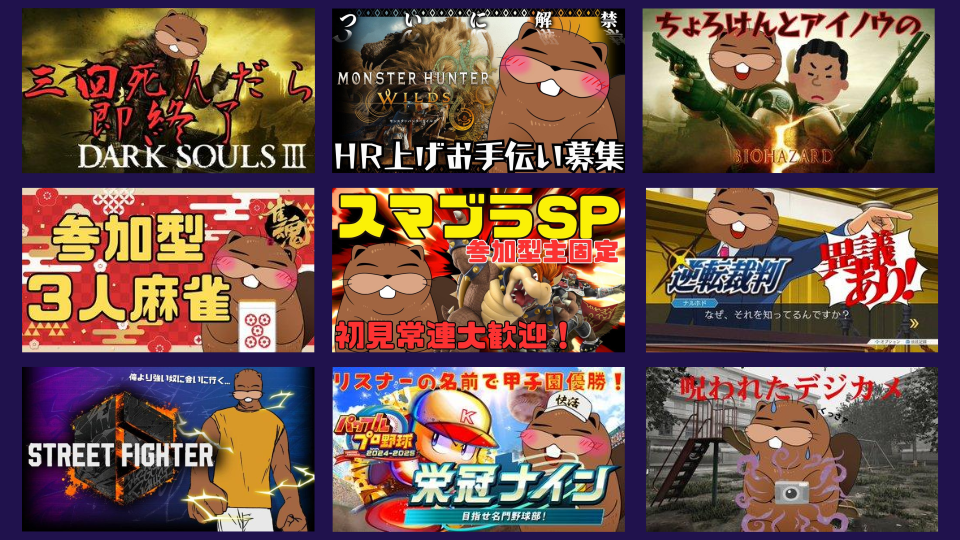
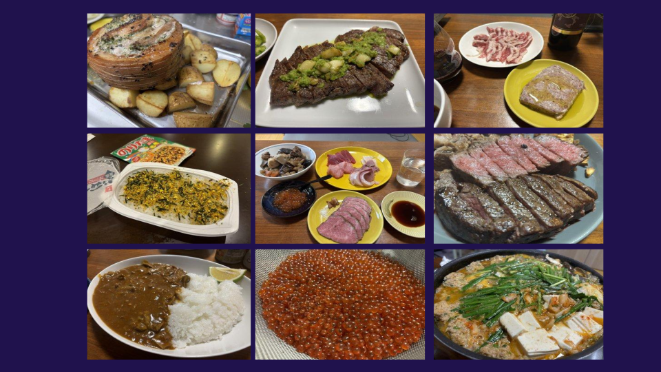

Contents

ゲーム配信：デジタルの森で、今日もビーバーは走り回る。
スマブラや雀魂、栄冠ナイン、アソビ大全、ダークソウル、逆転裁判他、視聴者から頂いたSteamゲームの実況動画を配信しています。 特に、スマブラ、雀魂、栄冠ナイン、アソビ大全は視聴者参加型で、視聴者の意見やリクエストを取り入れたコンテンツ作りを行っています。参加希望の際はライブチャットにて「参加希望」とご入力ください。

料理：つくる、たべる、わけあう。
体内のコアを破壊しない限り無限にローストビーフを錬成します。ローストビーフの他にも多様な肉料理・魚料理を得意としています。 ライブ感ある料理配信では、完成までのプロセスを丁寧に見せることで、視聴者に料理の楽しさを伝えています。思わず「食べたい！」と思わせるような料理を目指しています。 ゲリラ開催でローストビーフの視聴者プレゼント企画も開催しています。詳細はX(@chorotube)のポストをご確認ください。

自然保護教育活動：自然とともに、エンタメを育てる。
自然や動物との共生をテーマにした活動にも積極的に取り組んでいます。 最近では、実際のビーバーを観察しに足を運び、その仕草や生態の尊さに触れることで、自身の“ルーツ”に向き合う時間を大切にしました。 バーベキューや釣り体験を通して、自然の豊かさと儚さを肌で感じたこと、そして自然の素晴らしさを配信やSNSを通じて視聴者へ共有しています。 これらのフィールド体験を原点に、ちょろけんはただデジタルコンテンツを発信するだけでなく、 “好きだからこそ守りたい美しい自然”という想いを動画に乗せて伝えています。